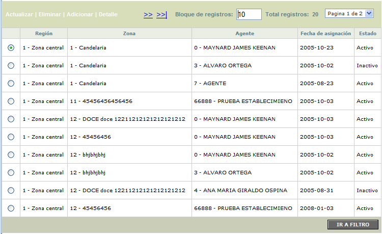
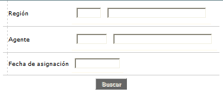
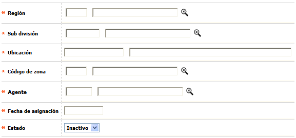
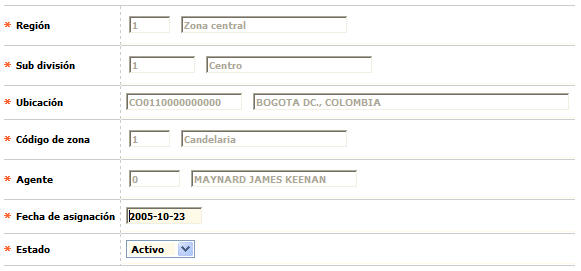
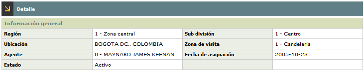

Funcionarios por zonas |
Mediante este formulario se determina la zona correspondiente por cada región, para las visitas de cada uno de los Agentes, especificando si está activo o no y la fecha de asignación.
El formulario contiene las opciones Actualizar, Eliminar, Adicionar y Detalle. Adicionalmente, cuenta con un filtro de búsqueda.

Filtro: Se pueden realizar consultas a través de las siguientes opciones:

Región |
Lista de valores que permite seleccionar una de las regiones parametrizadas en la opción Zonas geográficas. |
Agente |
Lista de valores que permite filtrar a través de los agentes parametrizados en la opción Funcionarios. |
Fecha de asignación |
Campo con formato YYYY-MM-DD, que permite filtrar a través de la fecha en la cual fue asignada la visita al establecimiento. |
Adicionar: Si el usuario invoca la opción Adicionar se despliega un nuevo formulario.

Región |
Lista de valores que permite seleccionar una de las regiones parametrizadas en la opción Zonas geográficas. |
Sub división |
Lista de valores que permite filtrar a través de los agentes parametrizados en la opción Funcionarios. |
Ubicación |
Campo de refresco automático que muestra el lugar al que corresponde la Sub división de la Región seleccionada. |
Código de zona |
Lista de valores que muestra las zonas correspondientes a la Ubicación seleccionada. |
Agente |
Esta lista de valores muestra todos aquellos que han sido parametrizados en la opción Funcionarios del Núcleo. |
Fecha de asignación |
Campo con formato YYYY-MM-DD, que permite filtrar a través de la fecha en la cual fue asignada la visita al establecimiento. |
Estado |
Lista de valores que permite seleccionar entre las opciones Inactivo o Activo. |
Actualizar: Si el usuario invoca la opción Actualizar se despliega un nuevo formulario en el cual los únicos campos modificables son: Fecha de asignación y Estado.

Detalle: El sistema muestra el siguiente formulario:
